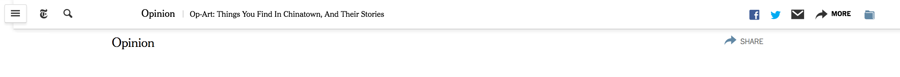
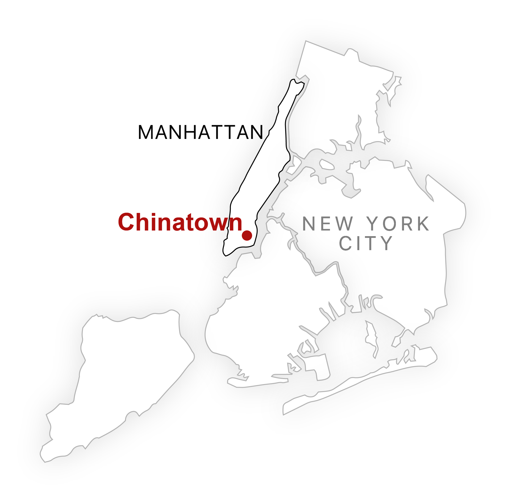

Op-Art: Stories in Chinatown, Hiding In Plain Sight
Op-Art: 在唐人街會找到的東西，和他們的故事
Op-Art: 在唐人街会找到的东西，和他们的故事

In TK year, the population of foreign-born residents in Chinatown was TK number. Now, TK years later new businesses, real estate developments, and wealthy newcomers are shifting the cultural balance of the neighborhood. Despite Chinatown's changes, it remains a cultural hub for Chinese and Chinese Americans within the five boroughs and beyond. Inside the homes and businesses of this neighborhood, you will still find objects that tell stories about the experience of immigration and adaptation in one of Manhattan’s last, vibrant immigrant communities. Hopefuly, these objects open a tiny window into parts of Chinatown and its communities that might be interesting or new — whether someone is just visiting, or their family as been in the neighborhood for decades.
粵語粵語粵語粵語粵語粵語粵語粵語粵語粵語粵語粵語粵語粵語粵語粵語粵語粵語粵語粵語粵語粵語粵語粵語粵語粵語粵語粵語粵語粵語粵語粵語粵語粵語粵語粵語粵語粵語粵語粵語粵語粵語粵語粵語粵語粵語粵語粵語粵語粵語粵語粵語粵語粵語粵語粵語粵語粵語粵語粵語粵語粵語粵語粵語粵語粵語粵語粵語粵語粵語粵語粵語粵語粵語粵語粵語粵語粵語粵語粵語粵語粵語粵語粵語粵語粵語粵語粵語粵語粵語粵語粵語粵語粵語粵語粵語粵語粵語粵語粵語粵語粵語粵語
国语国语国语国语国语国语国语国语国语国语国语国语国语国语国语国语国语国语国语国语国语国语国语国语国语国语国语国语国语国语国语国语国语国语国语国语国语国语国语国语国语国语国语国语国语国语国语国语国语国语国语国语国语国语国语国语国语国语国语国语国语国语国语国语国语国语国语国语国语国语国语国语国语国语国语国语国语国语国语国语国语国语国语国语国语国语国语国语国语国语国语国语国语国语国语国语国语国语国语国语国语国语国语国语国语国语国语国语国语国语国语国语国语国语国语国语国语国语国语国语国语国语国语国语国语国语国语国语国语国语国语国语国语国语国语国语国语国语国语国语国语国语国语国语国语国语国语国语国语国语国语国语国语国语国语国语国语国语国语国语国语国语国语国语
LISTEN
These objects and stories were collected through a series of workshops held with local community groups — organized by Aaron Reiss, while volunteering and working with Think!Chinatown, a local arts-based non-profit. At the end of the workshop series, the objects were displayed in street-facing windows of small businesses all over Chinatown, and passerbys could call in to hear the stories.
聽一下
粵語粵語粵語粵語粵語粵語粵語粵語粵語粵語粵語粵語粵語粵語粵語粵語粵語粵語粵語粵語粵語粵語粵語粵語粵語粵語粵語粵語粵語粵語粵語粵語粵語粵語粵語粵語粵語粵語粵語粵語粵語粵語粵語粵語粵語粵語粵語粵語粵語粵語粵語粵語粵語粵語粵語
听一下
国语国语国语国语国语国语国语国语国语国语国语国语国语国语国语国语国语国语国语国语国语国语国语国语国语国语国语国语国语国语国语国语国语国语国语国语国语国语国语国语国语国语国语国语国语国语国语国语国语国语国语国语国语国语国语国语国语国语国语国语国语国语国语国语国语国语